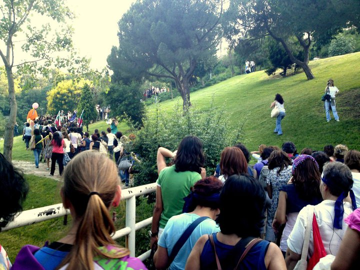
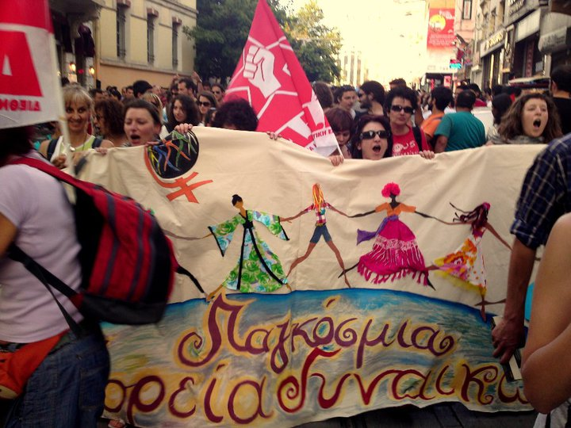
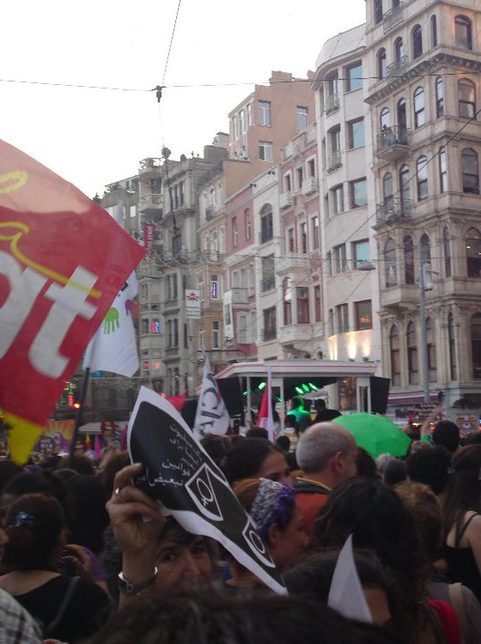
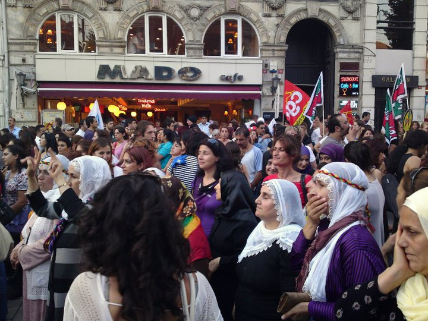
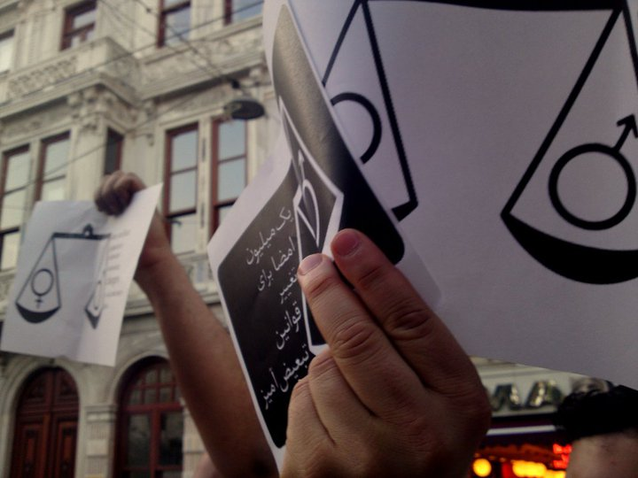
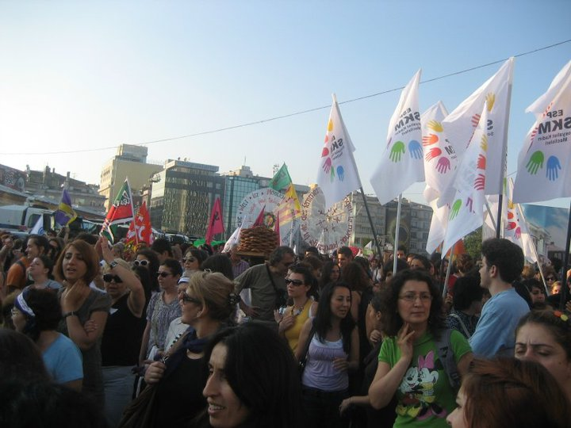
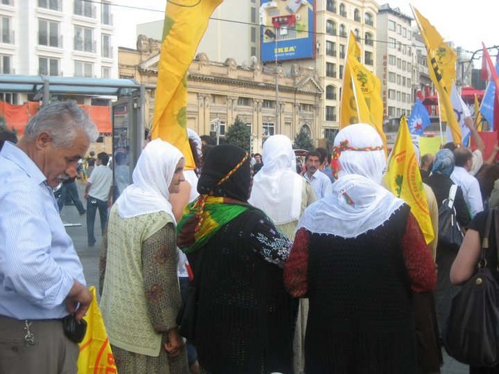

|
|
فروم اجتماعی اروپا در استانبول/گزارش تصویری
يكشنبه20 تیر 1389
تغییر برای برابری : فروم اجتماعی اروپا اولین بار در سال 2002 تشکیل شد. در ابتدا سالی یک بار و بعد به علت مشکلات مالی و پیدا کردن شهر میزبان به دو سال یکبار تبدیل شد. فروم اجتماعی فضایی است برای گروه ها و سازمان ها و ان جی او ها و افرادی که مستقل از قدرت های سیاسی فعالیت می کنند.دغدغه ی مشترک شرکت کنندگان فروم اجتماعی مبارزه با سرمایه داری و امپریالیسم است که خواسته یا نا خواسته با مبارزه علیه نژادپرستی ،تبعیض های جنسیتی، تبعیض های قومی،سرکوب فعالین سیاسی و اجتماعی و هر گونه بی عدالتی در جامعه گره می خورد.
فروم اجتماعی اروپا امسال در تاریخ یکم تا چهارم جولای در استانبول برگزار شد که به علت مکان برگزاری که چندان اروپایی محسوب نمی شود ، از اهمیت ویژه ای برخوردار بود.

در این فروم تعداد زیادی از ایرانیان ساکن اروپا وهمچنین تنی چند از فعالین حقوق زن در ایران شرکت کردند.

یکی دیگر از خصوصیات ویژه این فروم اجتماعی شروع آن بود.روز سی ام جون، گروه های فمنیستی اروپایی، ترک و کرد به طور مشترک چند کنفرانس برگزار کردند و آن روز را در آخر با مارشی از زنان در خیابان استقلال،یکی از خیابان های مرکزی شهر به پایان رساندند. زنان از گروه ها و کشورهای مختلف با شعارها و پلاکاردهای خود در این مارش حضور داشتند و شعار"ژین ژیان آزادی" به معنای "زن، زندگی، آزادی" به زبان کردی رساتر از همه شنیده می شد .

دیگر شعارهای جمعیت در مورد صلح، مخالفت زنان با جنگ ، خواسته درآمد برابر زنان و مردان، حقوق اقلیت های جنسی و ده ها خواسته ی دیگر به زبان های مختلف بود.

یکی از موضوعات مورد بحث در سمینارهای زنان، جنبش زنان در کشورهای در حال توسعه بود و بعضی سخنرانان اروپایی و یا افراد شرکت کننده در بحث ها اذعان داشتند که "ما نه تنها باید ارتباط خود را با این جنبش ها برقرار کنیم و حمایت خود را اعلام کنیم، بلکه باید از خواهرانمان در کشورهایی مثل ایران، ترکیه، افغانستان درس بگیریم".

یکی دیگر از بحثهای اصلی این سمینارها بحران فعلی اقتصادی اروپا و تاثیرش بر زندگی زنان بود. این موضوع دغدغه مشترک اکثر گروه های زنان شرکت کننده بود که در انتها به قراری مجدد برای بحث و همفکری در ماه نوامبر در کشور پرتقال به دعوت زنان پرتقالی ختم شد.

یکی از سمینارهای برگزار شده در این فروم اجتماعی در رابطه با جنبش های اجتماعی در ایران بود که بخش مهمی از آن به جنبش زنان و به خصوص کمپین یک میلیون امضا اختصاص داشت. در میان حرف های سخنران در مورد کمپین، چیزی که توجه شنوندگان را بسیار جلب کرد، ساختار کاری کمپین بود و بعد از آن سوالات بسیاری در مورد چگونگی تلاش برای کار افقی و تمرکز زدایی در کمپین پرسیده شد.
